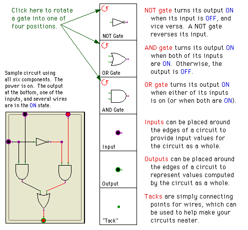
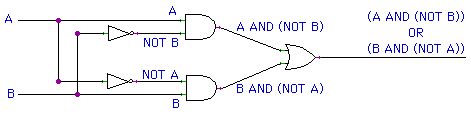

Logic and Circuits
A logic gate is a simple circuit with one or two inputs and one output. The inputs and outputs can be either ON or OFF, and the value of a gate's output is completely determined by the values of its inputs (with the proviso that when one of the inputs is changed, it takes some small amount of time for the output to change in response). Each gate does a simple computation. Circuits that do complex computations can be built by connecting outputs of some gates to inputs of others. In fact, an entire computer can be built in this way.
Circuits are constructed from AND gates, OR gates, and NOT gates. Each type of gate has a different rule for computing its output value. Circuits are laid out on a circuit board. Besides gates, the circuit board can contain Inputs, Outputs, and Tacks. Later, we'll see that circuits can also contain other circuits. All these components can be interconnected by wires. To the left of the circuit board is a pallette. The pallette contains components available to be used on the circuit board. You can't usually see all the components at once, but there is a scroll bar that allows you to scroll through all the components on the pallette. The following illustration shows the part of the pallette that contains the six standard components, along with some comments and a small sample circuit:

(One thing you should note: Wires cannot connect to each other except at Tacks. Just because two wires cross each other on the circuit board does not mean that they are connected. That is, no signal will propagate from one of the wires to another. Wires can only carry signals between components such as gates, Tacks, Inputs, and Outputs.)
The software that you launched should start up showing a sample circuit called "Basic Gates." At the top of the circuit board are an AND gate, an OR gate, and a NOT gate. The gates are connected to some Inputs and Outputs. A more complicated circuit builtfrom several gates occupies the bottom of the circuit board.
To see how the circuit works, you have to turn on the power. Power to the circuit board is turned on and off using the "Power" checkbox below the circuit board. The power is ON when the box is checked. Click on the Power checkbox now to turn on the power. (Why does the wire leading from the NOT gate come on when you do this?) When the power is on, you have control over the Inputs on the circuit board: you can turn an input ON and OFF by clicking on it. The circuit does the rest: signals from the Inputs propagate along wires, through gates and other components, and to the Outputs of the circuit. Try it with the sample circuit. If you have a problem, make sure the power is on and that you are clicking on an Input, not an Output.
You should check that the AND, OR, and NOT gates at the top of the circuit board have the expected behavior when you turn their inputs ON and OFF. You can also investigate the circuit in the bottom half of the logic board. Below the circuit board, to the left of the Power switch, you'll find a pop-up menu that can be used to control the speed at which signals propagate through the circuit. The speed is ordinarily set to "Fast." You can use the pop-up menu to change the speed to "Moderate" or "Slow" if you want to watch the circuit in slow motion. (For the most part, though, you probably want to leave the speed set to Fast.)
Logic gates and logic circuits are associated with mathematical logic, which is the study of the computations that can be done with the logical values true and false and with the logical operators and, or, and not. This association comes about when we think of ON as representing true and OFF as representing false. In that case, AND, OR, and NOT gates do the same computations as the operators and, or, and not.
Mathematical logic uses Boolean algebra, in which the letters A, B, C, and so on, are used to represent logical values. Letters are combined using the logical operators and, or, and not. For example,
(A and C) or (B and (not C))
is an expression of Boolean algebra. As soon as the letters in an expression are assigned values true or false, the value of the entire expression can be computed.
Every expression of boolean algebra corresponds to a logic circuit. The letters used in the expression are represented by the Inputs to the circuit. Each wire in the circuit represents some part of the expression. A gate takes the values from its input wires and combines them with the appropriate word -- and, or, or not -- to produce the label on its output wire. The final output of the whole circuit represents the expression as a whole. For example, consider the sample circuit. If the inputs are labeled A and B, then the wires in the circuit can be labeled as follows:

The circuit as a whole corresponds to the final output expression, (A and (not B)) or (B and (not A)). This expression in turn serves as a blueprint for the circuit. You can use it as a guide for building the circuit. The expression given earlier, (A and C) or (B and (not C)), corresponds to another sample circuit shown in the illustration .
To sum up, given any expression of Boolean algebra, a circuit can be built to compute that expression. Conversely, any output of a logic circuit that does not contain a "feedback loop" can be described by a Boolean algebra expression. This is a powerful association that is useful in understanding and designing logic circuits. (Note: Feedback occurs when the output of a gate is connected through one or more other components back to an input of the same gate...)